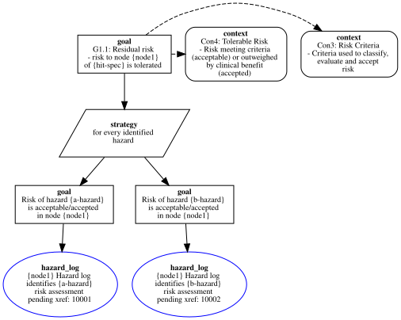

MS_residual_risk1_g1_1_2
Pattern 'MS_residual_risk1'
HIT : hit_system:specification = 'hit-spec'
Node : platform:node = node(node1,[memory(ram,[family(ram),size(16),alignment(4)]),memory(disk,[family(disk),size(1024)])],[processor(cpu0,[family(cpu),frequency('2GHz'),schedule(100)]),processor(cpu1,[family(cpu),frequency('2GHz'),schedule(100)]),processor(cpu2,[family(cpu),frequency('2GHz'),schedule(100)]),processor(cpu3,[family(cpu),frequency('2GHz'),schedule(100)])],[device(es,[port(pt1,[type(pt1)])],[family(tsn_card),schedule(100)])],[],[os(linux)])
GSN Representation

Error Log